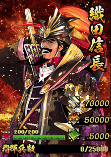
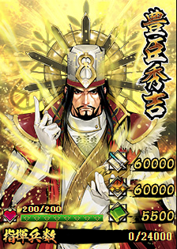
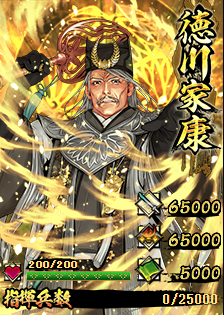

傑武将一覧
傑は3種のみで、統率・コスト・鍛錬の表示を持たない特殊なカード。 効果欄は上から順に、戦闘に影響する効果(濃い文字)、拠点の見た目や階位が変わる常時効果(薄い文字)の並びにしている。 3種とも「所属部隊の武将が持つスキルを無効化や発動率低下から保護」を持つため覇道スキルにあたる。
| カード | No. | 武将名 | スキル | 攻撃 | 防御 | 兵法 | 指揮兵数 | 効果 |
|---|---|---|---|---|---|---|---|---|
 |
20001 | 織田信長おだのぶなが | 天魔絶界 | 70000 | 50000 | 5000 | 25000 |
|
 |
20002 | 豊臣秀吉とよとみひでよし | 覇軍 悉国平定 | 60000 | 60000 | 5500 | 24000 |
|
 |
20003 | 徳川家康とくがわいえやす | 神威蓋世 | 65000 | 65000 | 5000 | 25000 |
|